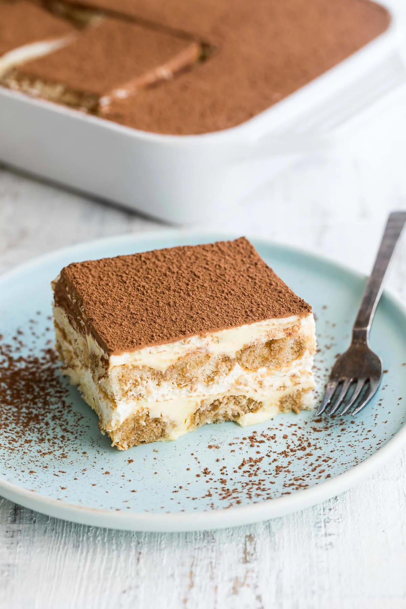

Tiramisu

A popular Italian dessert made with layers of coffee-soaked ladyfingers, mascarpone cheese, and cocoa.
Ingredients
- 1 pack ladyfingers
- 1 cup brewed coffee
- 1/2 cup sugar
- 1 cup mascarpone cheese
- 1/2 cup cocoa powder
- 1/2 cup heavy cream
Instructions
- Dip ladyfingers in coffee and place them in a baking dish.
- Mix mascarpone cheese with sugar and spread over the ladyfingers.
- Whip heavy cream and layer it over the mascarpone mixture.
- Dust the top with cocoa powder.
- Refrigerate for at least 2 hours before serving.
Back to Homepage